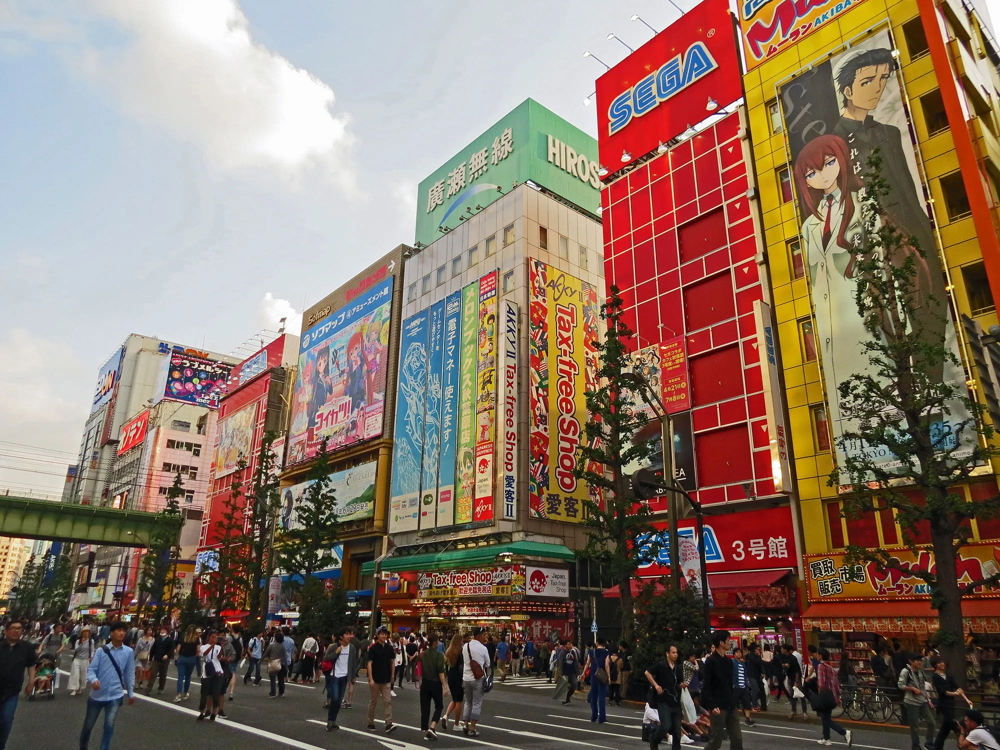
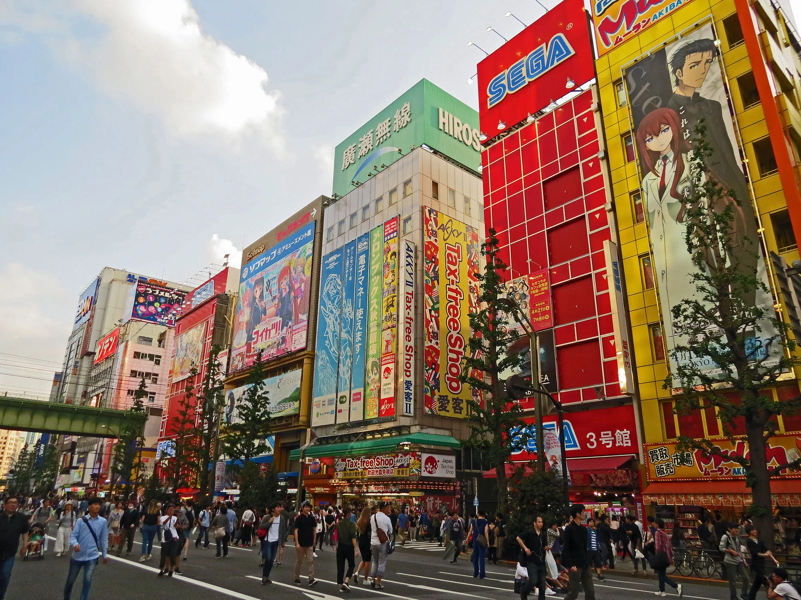
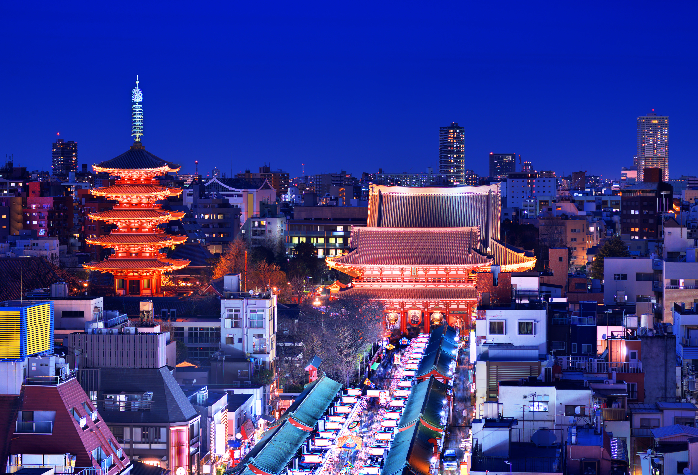
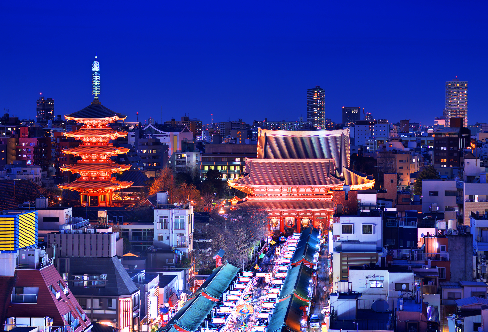

Originally named Edo, the city started to flourish after Tokugawa Ieyasu established the Tokugawa Shogunate here in 1603. As the center of politics and culture in Japan, Edo grew into a huge city with a population of over a million by the mid-eighteenth century. Thus, Tokyo became the capital of Japan.
What is Tokyo’s culture like?
Tokyo’s culture is a mix of the traditional and the new. The contemporary culture boasts of anime, fashion, design, high end robotic electronics and pop culture. The traditional culture and rituals of Tokyo have been carried from the Edo period. The different districts in Tokyo have their own cultural backdrop. Performing arts such as Kabuki – za, Noh, Rakugo, the making of ukiyo-e prints, the writing of the short haiku poetry, tea ceremonies, all form a part of Tokyo’s cultural backdrop. Tokyo also has beautifully landscaped gardens, streets lined with cherry blossoms, buddhist shrines and people enjoy dressing in the traditional kimono. The people of Tokyo honour omotenashi, the Japanese sincerity in showing hospitality to visitors.
 

 
